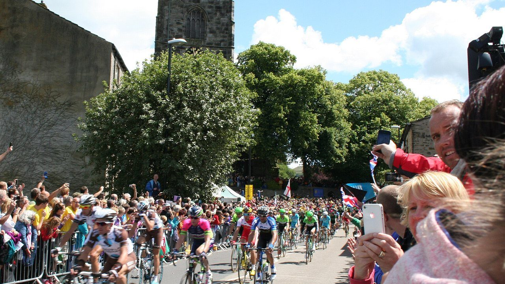

Race, Yorkshire Dales

Behind
Best +0:01
371W
Target 418 W-47 W
- Cadence
- 87rpm
- Heart
- 140bpm
- Speed
- 26.5km/h
Work12 of 24
3:37
Next: · 0:30 at level 24
+4.3%
289 m climbed
9.12 km
13
Resistance / 32
Solo races your best-time ghost: position reads Ahead or Behind, and solo alone gets a Pause button. Frozen at 19:51.